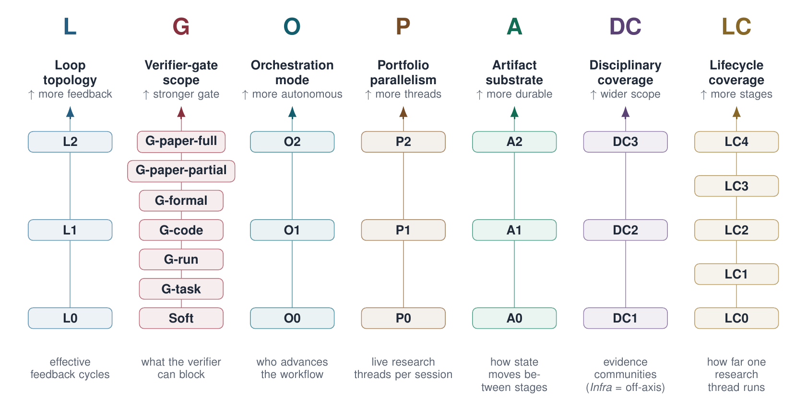
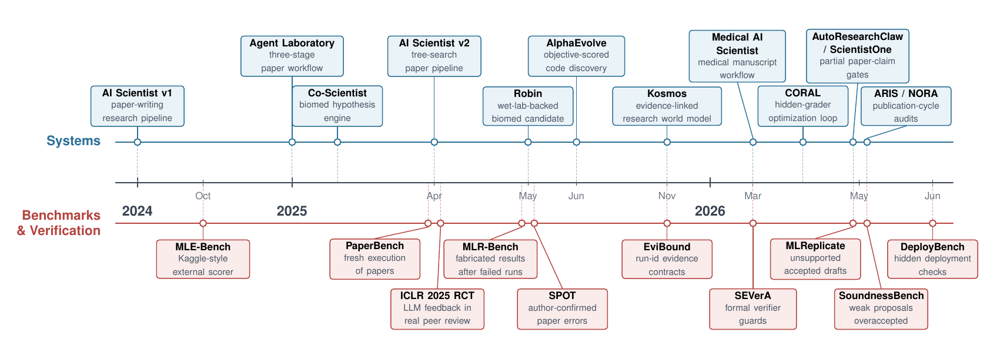
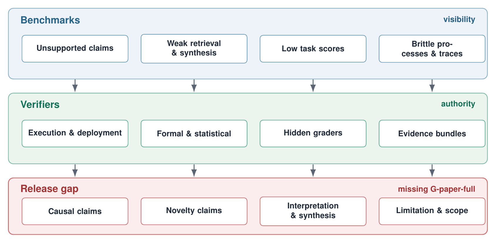

In barely two years, autonomous research has jumped from isolated research assistants to systems that automate large stretches of the scientific workflow,drafting papers, searching over candidates, running code, and connecting to wet-lab and simulator readouts. But the same systems are described as AI scientists, research agents, deep-research agents, or agentic-science platforms, report wildly different kinds of evidence, and are scored on benchmarks that rarely line up. The field has outgrown its own map.
This survey draws that map. It systematizes public work on autonomous research through June 2026, and its organizing move is a single distinction the field usually treats as a footnote: it separates what a system can produce from what it can defend. Read along that axis, most systems can generate a research artifact,yet almost none can block a weak result before release. The survey makes that missing release architecture explicit, system by system.

Timeline of autonomous-research systems and evaluation signals. The upper track summarizes system and domain milestones; the lower track summarizes benchmarks, audits, and review studies that motivate evaluation and verification.
The survey is built in two halves that answer two different questions. Part one maps the systems,what each one builds and how far it can defend it. Part two maps the evaluation and verification machinery around them,what benchmarks can make visible and what verifiers can actually block.
For part one, the survey hand-codes 56 autonomous-research systems along seven axes, each prying apart a capability that end-to-end "AI Scientist" claims tend to fuse into one:
| Axis | What it records |
|---|---|
| Loop topology (L) | Whether feedback is absent, single-loop, or multi-loop |
| Verifier gate scope (G) | What a verifier can actually block in practice |
| Orchestration mode (O) | Who advances the workflow: human, script, or agent |
| Portfolio parallelism (P) | One project, in-project branches, or multiple live projects |
| Artifact substrate (A) | Context, loose files, or protocolized records |
| Disciplinary coverage (DC) | Claimed scope vs. publicly demonstrated evidence |
| Lifecycle coverage (LC) | How far a thread reaches, from support module to publication cycle |
Every system also carries an Evidence Reliability Grade (R1 toR5) that records the strength of public evidence rather than capability,an infrastructure component with strong artifacts can outrank a flashy end-to-end system whose claims are thinly substantiated.
Read together, the axes draw a sharp line. Production has scaled; defensibility has not. No reviewed public system reaches a full-manuscript release gate (G-paper-full), agent-dispatcher orchestration (O2), a multi-project portfolio (P2), or cross-disciplinary validation in the DC-Evidence column,and only four gate even selected paper-level claims. The result is a field map that locates each system by both what it builds and what it can stand behind.
This is the core of the survey: every reviewed autonomous-research system, hand-coded on all seven axes plus its Evidence Reliability Grade (R) from public evidence only. Where a paper claimed a capability without inspectable mechanism, artifact, or trace evidence, the lower label was assigned and the claim toevidence gap recorded. Sorted by first public date.
| System | Date | L | G | O | P | A | DC-Claim | DC-Evidence | LC | R↑ | Key note |
|---|---|---|---|---|---|---|---|---|---|---|---|
| AI Scientist v1 | 24.08 | L1 | — | O1 | P1 | A1 | DC3 | DC1-CS/ML | LC3 | R4 | Paper pipeline with soft LLM review; no release-blocking claim gate. |
| PaperQA2 | 24.09 | L0 | — | O1 | P0 | A2 | Infra | Infra | LC0 | R4 | Literature QA and citation grounding module. |
| CycleResearcher | 24.11 | L0 | — | O1 | P1 | A1 | DC3 | DC1-CS/ML | LC1 | R3 | Paper-shaped review loop has disclosed fabricated experiments, so it is treated as textual/proposal-stage coverage rather than LC3 evidence. |
| OpenScholar | 24.11 | L0 | — | O1 | P0 | A2 | Infra | Infra | LC0 | R5 | Citation-grounded literature infrastructure, not end-to-end research. |
| Agent Laboratory | 25.01 | L1 | — | O1 | P0 | A1 | DC3 | DC1-CS/ML | LC3 | R3 | Three-phase workflow with human checkpoints and judge/human score gap. |
| AIDE | 25.02 | L0 | G-task | O1 | P1 | A1 | DC1-ML | DC1-ML | LC2 | R4 | ML competition agent with external scorer. |
| MLGym | 25.02 | L0 | G-task | O1 | P0 | A2 | DC1-ML | DC1-ML | LC0 | R4 | Research-agent framework and benchmark; independent reruns do not show branch control. |
| Tree-of-Debate | 25.02 | L1 | — | O1 | P1 | A1 | Infra | Infra | LC0 | R3 | Retrieval-backed debate for paper comparison, not new evidence production. |
| Co-Scientist | 25.02 | L2 | — | O1 | P1 | A1 | DC3 | DC1-biomed | LC1 | R4 | Hypothesis loop proposes and ranks candidates by Elo without an enforceable task gate; selected wet-lab checks are external validation, not autonomous evidence production. |
| AgentRxiv | 25.03 | L1 | — | O1 | P1 | A2 | DC3 | DC1-CS/ML | LC3 | R3 | Collaborative autonomous-research target with a searchable preprint substrate and limited public gate evidence. |
| AI Scientist v2 | 25.04 | L2 | — | O1 | P1 | A1 | DC3 | DC1-CS/ML | LC3 | R4 | Tree search and visual critique add feedback; publication signal is reported, while release review remains soft. |
| Robin | 25.05 | L1 | G-run | O1 | P1 | A1 | DC1-biomed | DC1-biomed | LC2 | R4 | RNA-seq and assay evidence support a candidate, not an autonomous full paper. |
| R&D-Agent | 25.05 | L0 | G-task | O1 | P1 | A2 | DC1-ML/DS | DC1-ML/DS | LC2 | R4 | Industrial data-science loop with an exploration graph and MLE-Bench-style scoring. |
| NovelSeek | 25.05 | L1 | G-task | O1 | P1 | A1 | DC3 | DC2 | LC2 | R3 | Idea-branch evolution and hypothesis-to-verification utilities with multi-domain computational readouts. |
| AI-Researcher | 25.05 | L1 | — | O1 | P1 | A1 | DC3 | DC1-CS/ML | LC3 | R3 | Literature, math-to-code, and paper workflow; judge artifacts remain a boundary. |
| AlphaEvolve | 25.06 | L0 | G-code | O1 | P1 | A2 | DC2 | DC2 | LC2 | R3 | Protocolized program database with objective-scored code gates. |
| AIRA-dojo | 25.07 | L0 | G-task | O1 | P1 | A2 | DC1-ML | DC1-ML | LC2 | R4 | Iterative ML loop drafts, improves, debugs, executes notebooks, evaluates CV, and writes submissions; no manuscript workflow. |
| SWE-Debate | 25.07 | L1 | G-code | O1 | P1 | A1 | DC1-SE | DC1-SE | LC2 | R3 | Debate and MCTS around software patches; code gate is local. |
| MetaAgent | 25.08 | L0 | — | O1 | P0 | A2 | Infra | Infra | LC0 | R3 | Tool-interaction history feeds a persistent vector memory while reflection is injected into context separately; no enforceable gate or parallel research-branch evidence. |
| CMA | 25.08 | L0 | — | O1 | P0 | A2 | Infra | Infra | LC0 | R2 | Asynchronous modules and shared memory, but no qualifying research-review loop or verifier gate. |
| AInstein | 25.10 | L2 | G-task | O1 | P0 | A1 | DC1-CS/ML | DC1-CS/ML | LC1 | R4 | Generalizer and solver critique loops support pre-experimental problem-solution evidence. |
| Kosmos | 25.11 | L0 | — | O1 | P1 | A2 | DC3 | DC2 | LC3 | R4 | Sentence-to-evidence links help audit, but synthesis and interpretation remain weaker. |
| EviBound | 25.11 | L0 | G-run | O1 | P0 | A2 | Infra | DC1-ML | LC0 | R4 | Reusable verifier infrastructure for run contracts. |
| AgentEvolver | 25.11 | L0 | G-task | O1 | P1 | A2 | Infra | Infra | LC0 | R3 | Agent-controller evolution over held-out tool-use tasks. |
| OmniScientist | 25.11 | L2 | — | O1 | P0 | A2 | DC3 | DC1-CS/ML | LC3 | R2 | AI/CS case-study evidence supports a broader ideation, experiment, writing, and review workflow claim. |
| CFD-copilot | 25.12 | L0 | G-run | O1 | P0 | A1 | DC1-CFD | DC1-CFD | LC2 | R4 | Simulation automation with CFD readouts. |
| PhysMaster | 25.12 | L1 | G-run | O1 | P1 | A2 | DC1-physics | DC1-physics | LC2 | R2 | Literature retrieval and MCTS trajectories over physics cases with simulator checks. |
| ASG-SI | 25.12 | L0 | G-run | O1 | P0 | A2 | Infra | Infra | LC0 | R2 | Audited skill-graph proposal; O/A and run-gate evidence are architectural claims. |
| ML-Master 2.0 | 26.01 | L0 | G-task | O1 | P1 | A2 | DC1-ML | DC1-ML | LC2 | R2 | MLE-Bench medal loop with hierarchical cognitive cache. |
| InternAgent-1.5 | 26.02 | L0 | G-task | O1 | P1 | A2 | DC3 | DC2 | LC2 | R2 | Generation toverification toevolution over long-horizon scientific tasks; public evidence is claim-level. |
| ClawdLab | 26.02 | L0 | — | O0 | P0 | A2 | Infra | Infra | LC0 | R2 | Governance and harness proposal with PI oversight; public evidence is architectural, not a demonstrated gate. |
| EvoScientist | 26.03 | L1 | — | O1 | P1 | A2 | DC3 | DC1-CS/ML | LC3 | R2 | Idea generation, code execution, and reported full papers support LC3; venue acceptance does not by itself imply LC4. |
| OpenResearcher | 26.03 | L0 | G-task | O1 | P1 | A2 | Infra | Infra | LC0 | R5 | Open search/open/find trajectories for evidence seeking. |
| AEGIS | 26.03 | L1 | G-code | O1 | P0 | A2 | DC1-security | DC1-security | LC0 | R3 | Dialectical verifier and meta-audit over code evidence. |
| Bilevel Autoresearch | 26.03 | L0 | G-task | O1 | P0 | A2 | Infra | DC1-CS/ML | LC2 | R3 | Sequential trace-mediated inner loop and outer mechanism search over scoreable code tasks. |
| SEVerA | 26.03 | L0 | G-formal | O1 | P0 | A2 | Infra | DC1-formal | LC0 | R4 | Reusable verifier infrastructure for formal guards. |
| TianJi | 26.03 | L1 | G-run | O1 | P0 | A1 | DC1-atmos. | DC1-atmos. | LC2 | R3 | Meteorology hypotheses with numerical-model checks. |
| Medical AI Scientist | 26.03 | L2 | G-task | O1 | P0 | A2 | DC1-Med | DC1-Med | LC3 | R3 | Multi-stage medical-AI manuscript workflow with idea gates and structured experimental records. |
| Multi-Agent Collab | 26.03 | L0 | G-task | O1 | P1 | A2 | Infra | DC1-ML | LC2 | R3 | Worktree patches, global memory, preflight, training, and val-bpb acceptance form a code-optimization evidence loop. |
| CORAL | 26.04 | L0 | G-task | O1 | P1 | A2 | Infra | DC1-CS/optim. | LC2 | R4 | Hidden graders and worktrees provide strong task gates; heartbeat reflection is same-agent control, not a reviewer loop. |
| AutoSOTA | 26.04 | L0 | G-code | O1 | P1 | A2 | DC1-CS/ML | DC1-CS/ML | LC2 | R4 | Repository-grounded optimization with executable score improvement and run records. |
| A-Lab | 26.04 | L0 | G-run | O1 | P1 | A2 | DC1-materials | DC1-materials | LC2 | R3 | Robotic synthesis and characterization provide local physical readouts. |
| AgentV-RL | 26.04 | L1 | G-task | O1 | P0 | A1 | Infra | Infra | LC0 | R4 | Forward/backward LLM verifier loop over decomposable answers; support module rather than research lifecycle. |
| Debate as Reward | 26.04 | L0 | G-task | O1 | P1 | A1 | DC1-CS/ML | DC1-CS/ML | LC1 | R4 | Ideation reward signal; narrow task verifier rather than publication gate. |
| Knows | 26.04 | L0 | — | O0 | P0 | A2 | Infra | Infra | LC0 | R4 | YAML sidecar serializes claims, evidence, relations, and actions. |
| ARA | 26.04 | L0 | G-run | O0 | P0 | A2 | Infra | Infra | LC0 | R4 | Agent-native package improves reproduction and rigor audit. |
| SciCrafter | 26.04 | L0 | G-task | O1 | P1 | A2 | DC1-embodied | DC1-embodied | LC2 | R4 | MCP traces and structured knowledge books support controlled redstone discovery gates. |
| NORA | 26.05 | L2 | G-paper-partial | O0 | P0 | A2 | DC1-spatial | DC1-spatial | LC4 | R3 | Target venue, paper writing, review/revise, submit-check, and submission packaging support LC4; final authority remains human. |
| ARIS | 26.05 | L2 | G-paper-partial | O0 | P0 | A2 | DC3 | DC1-CS/ML | LC4 | R4 | Skill suite spans idea discovery, experiment bridge, paper writing, rebuttal, venue templates, and pre-submission audits; evidence remains observational. |
| PARNESS | 26.05 | L0 | — | O1 | P0 | A2 | Infra | Infra | LC0 | R3 | Declarative DAG and cross-run knowledge support coding agents; no demonstrated P2 controller or release gate. |
| SkillFlow | 26.05 | L0 | G-task | O1 | P1 | A2 | Infra | Infra | LC0 | R4 | Skill-library controller trained on verifiable task rewards. |
| Qumus | 26.05 | L0 | G-run | O1 | P0 | A2 | DC1-materials | DC1-materials | LC2 | R3 | Sequential robotic synthesis and device evidence support local physical claims. |
| AutoResearchClaw | 26.05 | L2 | G-paper-partial | O1 | P1 | A2 | DC3 | DC2 | LC3 | R4 | Discovery-experiment-writing workflow and export checks support LC3; public evidence does not show rebuttal or camera-ready workflow. |
| HANA | 26.05 | L0 | — | O1 | P1 | A1 | DC1-networks | DC1-networks | LC0 | R2 | Hierarchical network proposal without demonstrated context-separated reviewer-loop evidence. |
| ScientistOne | 26.05 | L2 | G-paper-partial | O1 | P1 | A2 | DC3 | DC1-CS/systems | LC3 | R4 | Chain-of-Evidence checks paper integrity, with semantic support still partial. |
| AutoScientists | 26.05 | L1 | G-task | O1 | P1 | A2 | DC2 | DC2 | LC2 | R4 | Shared champions, logs, forums, and dead-end records gate benchmark progress. |
L loop topology (L0 none → L2 nested reviewer loops) · G verifier gate scope (— none, then G-task / G-run / G-code / G-formal / G-paper-partial / G-paper-full by release relevance) · O orchestration (O0 human, O1 script, O2 agent-dispatcher) · P portfolio parallelism (P0 one project, P1 in-project branches, P2 multi-project) · A artifact substrate (A0 context, A1 loose files, A2 protocolized records) · DC disciplinary coverage, claimed vs. evidenced (DC1 single community, DC2 multi-domain computational, DC3 cross-disciplinary, Infra domain-agnostic) · LC lifecycle coverage (LC0 support module → LC4 publication cycle) · R Evidence Reliability Grade (R1 unsubstantiated → R5 verified). No reviewed public system reaches G-paper-full, O2, or P2.
The second half of the survey turns from the systems to the machinery that judges them, and it keeps two jobs separate. Evaluation asks which failures a system makes visible,failed execution, weak retrieval, a fragile process, or an unsupported claim,and benchmarks supply that visibility. Verification asks what can actually block a generated artifact from being accepted, submitted, or released. A benchmark can expose a failure without holding any release authority; a verifier can block a narrow failure without seeing the wider research process. Each is necessary, and neither substitutes for the other.

The evaluation-and-verification map: benchmark targets (what is made visible) on one side, verifier routes (what can be blocked) on the other.
The survey catalogs benchmarks by the failure each one is built to expose. Every target measures one slice of the problem and hides another, and none yields a paper-level pass/fail that a gate could enforce on a generated manuscript.
| Target | What it tests,and what it cannot see |
|---|---|
| Reconstruction | Can an agent recover an executable or paper-level artifact from a published record? Running the artifact is measurable; validating every claim attached to it is not. |
| Optimization | Research as search under an external scorer (competition metric, validation loss, task reward). Winning the scorer is not the same as making a defensible claim. |
| Process quality | Does the workflow resemble research,rigor, retrieval, synthesis,not just a local metric? But final scoring leans on model judges, inheriting the LLM-as-judge ceiling. |
| Soundness | Do plausible claims survive evidence checks? The strongest warning signal: e.g. SPOT reports ~21% recall on author-confirmed paper errors; SoundnessBench ~26% on low-soundness proposals. |
A cross-cutting validity threat sits underneath all four: contamination, leaderboard overfitting, and disclosure gaps can inflate scores even when the rest of the protocol is sound.
Every system has a verifier slot. The survey identifies what fills it across the corpus, ordered by how much external evidence each route brings to the gate,because if generator and verifier share the same context and incentives, verification collapses into style-sensitive self-review.
| Verifier route | What it can block |
|---|---|
| Execution & deployment | Competition metrics, unit tests, exploits, deployment endpoints,the clearest antidote to circularity, but authority binds to a specific task object, not a paper's claims. |
| Formal & statistical gates | Accept or reject when the target is a contract or calibrated test (run records, metric ranges, logic specifications). Strong where the target is explicit, silent otherwise. |
| Evidence bundles | Bind numbers, citations, runs, and artifacts to declared sources (chain-of-evidence, numeric registries). Reaches closest to the full paper, yet still misses causal, interpretive, novelty, and limitation claims. |
| LLM-as-judge | The most common route,and the structurally weakest. Reads text without external evidence; stacking more judges or denser rubrics does not lift the ceiling. |
The same boundary repeats across six scientific domains,biology, chemistry and materials, physics and astronomy, medicine, engineering and computer science, and quantum. In every one, a local readout (an assay, a sample, a reproduced number, a code patch, a circuit) verifies a local piece without covering the surrounding paper. The missing instrument sits at the architecture level: a release gate would need claim extraction, independent counterevidence search, evidence attached to specific claim spans, a release-blocking rule, and human adjudication where artifacts cannot settle the dispute.